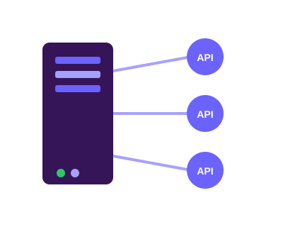
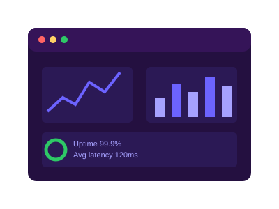
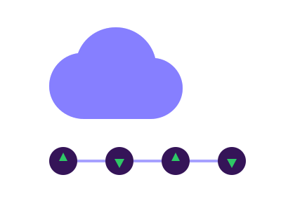

Backend Development · Cloud · System Observability
Results-oriented Software Engineer with 2+ years of experience in full-cycle software development. I specialize in backend development, API integration, and system observability using Java, Spring Boot, and Grafana, and have a track record of optimizing delivery workflows with Azure DevOps. I'm a recipient of the Bravo Award for technical excellence and enjoy building scalable, reliable solutions — with a growing interest in cloud infrastructure on AWS.
I build backend services and RESTful APIs using Java and Spring Boot, with a focus on clean, maintainable microservices.
I've worked across Fintech products integrating systems such as Finastra FTI, FCC, and FCM, plus Google and Exotel APIs.


I integrate data sources with Grafana to give teams real-time monitoring and actionable insight into system performance.
Good observability is what turns "something feels off" into a fast, confident fix.
I use Azure DevOps to streamline the full SDLC across development, testing, and deployment, and I'm growing my hands-on AWS experience (EC2, RDS, S3, DynamoDB, IAM).
